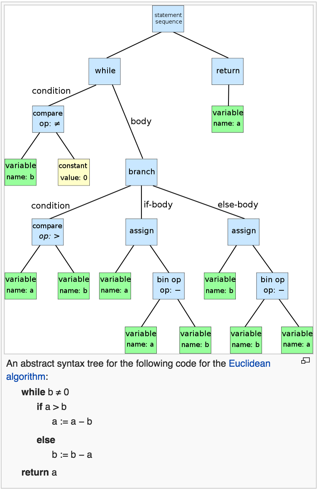
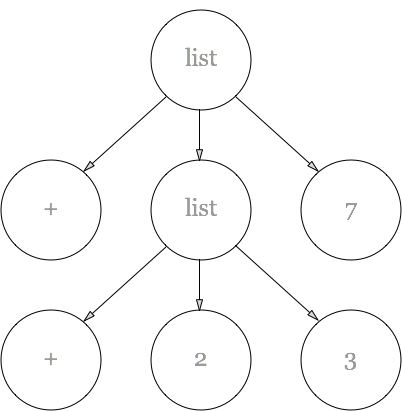

Note: I'm about the millionth person to write an answer to this question. I'm writing it distill and improve my own understanding, not because there's anything novel about my answer. If it's useful to you, great! And if you believe I'm mistaken about anything, do let me know, mn@michaelnielsen.org.
When people are first exposed to Lisp, they often find the use of parentheses strange and annoying. Why are the parentheses there? Is it bad design, a feature that could easily be removed or reduced? Or is there some good reason Lisp is full of parentheses, and other programming languages are not?
In this note I explain how the parentheses arise as a consequence of certain design goals. They're not the unique way of achieving those design goals, but they are a simple and natural approach. Most other languages do not share those design goals, and so do not require the parentheses.
Background on abstract syntax trees (ASTs)
In many (not all) programming languages, code is represented internally by the interpreter or compiler using an abstract syntax tree (AST). I won't define ASTs precisely. But the idea is to break complex blocks of code into atomic pieces, in a way that makes it easy to execute the code, or transform or analyze in some other way.
Here's a stylized example of an AST for a code block implementing the Euclidean algorithm, taken from Wikipedia:

In most languages, code starts life as a string. The interpreter or compiler parses the string, transforming it into an AST. The AST is then used by the interpreter or compiler as the basis for execution.
Some languages make the AST available as a data
structure. In Python, for example, the ast
module allows you to convert strings containing code to
the corresponding AST, and then to manipulate the
AST. But even when a language makes this possible, it's
usually something of an afterthought, rather difficult
to use, and as a consequence only rarely used. It's
certainly not a core competency of the language.
Lisp: a language which makes it easy to work with ASTs
Lisp takes a different approach, based around the design goal that it should be easy to analyze and manipulate the AST for any piece of code.
Practically speaking, this broad design goal is achieved through three more detailed design goals.
First, the correspondence between code and AST should be direct to the point of being almost trivial. So, for instance, the Lisp code
(+ (+ 2 3) 7)
corresponds to an AST that looks something like** I'm ignorant of the details of the implementation of standard Lisp interpreters, so I'm not sure the internal AST is this – it's easy to imagine alternate choices. But this conveys the broad idea.:

A second design goal is that Lisp should have lists as a central data structure. Lisp thus has many operations to manipulate and analyze lists.
A third design goal, complementing and completing the first two, is that code should be represented as a list.
The net result is to make it easy to analyze and manipulate the AST for any piece of code.
These design goals have several lovely consequences.
First, they make it easy for Lisp programs to manipulate code: not only is code data, in fact the AST is data, and it's very easy to transform and manipulate the AST in powerful ways. This is the basis for Lisp macros.
Second, having direct access to the AST makes it easy to extend the language, and to write domain specific languages (DSLs).
These are excellent features to have in a language. But they come at a price that doesn't need to be paid by programming languages that don't make representing the AST such a high priority (i.e., most languages). They mean that there needs to be a simple way of representing a tree structure within Lisp code. The purpose of the parentheses is to enable that representation. In particular, an open parenthesis, "(", means "step down a level of the tree". And a close parenthesis, ")", means "step back up a level of the tree".
Basically, parentheses give you macros and DSLs.
There are other ways we could represent a tree structure
in code. One often-suggested way is to use indentation.
So, for example, (+ (+ 2 3) 7) could
become:
+ + 2 3 7
In this representation, the use of one extra level of indentation means simply “go down a level in the tree”.
There are other possible approaches to representing a tree structure. Regardless of the details of the approach taken, once you've committed to representing the AST, you need some way of representing a tree structure in code. Parentheses are a simple and natural way of doing this. And that's why Lisp has so many parentheses.
Problem for later: There are other languages such as Haskell, Prolog and Ruby which are also extremely extensible (I am told). They do not, so far as I know, make use of parentheses. How do they fit into this story?
Implications for the design of programming languages
How desirable is it to be able to represent and manipulate the AST in such a simple and direct way?
Unfortunately, I don't really know the answer to that question. I haven't had enough experience writing macros or DSLs. To figure it out I'd need either a lot more experience, or some really good example code. Even better would be both!
Acknowledgements: These notes were strongly influenced by several of the answers to this StackOverflow question about whether a language can have Lisp's macros without parentheses.